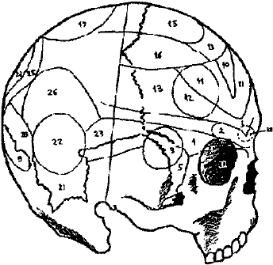

Ara ş t ı rma Serisi No.13
¯¯¯¯¯¯¯¯¯¯¯¯¯¯¯¯¯¯¯¯¯¯¯¯¯¯¯¯¯¯¯¯¯¯
11
Yüz Okuma Sanat ı
¯¯¯¯¯¯¯¯¯¯¯¯¯¯¯¯¯¯¯¯¯¯¯¯¯¯¯¯¯¯¯¯¯¯
◄ Ş ekil 4. İ nsan kafatas ı n ı n yandan görünümü

1. E ğ itilme yetene ğ i 2. Yer ve yön hissi 3. Renk hissi 4. Ses hissi 5. Say ı
6. Sanat hissi 7. H ı rs ı zl ı k.
8. Benzerli ğ i h ı zl ı alg ı lama yetene ğ i.
9. Felsefi muhakeme 10. Zeka
11. Organizatörlük yetene ğ i. 12. İ yi kalplilik
13. Dini konulara ilgi 14. Taklit hissi. 15. Kararl ı l ı k.
16. Cinsel e ğ ilim hissi. 17. Ki ş isellik hissi 18. Dostluk, as ı l ı l ı k.
19. Sava ş kanl ı k, y ı rt ı c ı l ı k 20. Adam öldürme 21. Hilekarl ı k 22. Kibirlilik
23. Ş öhret tutkusu
24. Tedbirlilik, ölçülü davranma.
Gall'm sistemi d ı ş ı nda ba ş ka sistemler de mevcuttu (Örne ğ in, "Spurzheim sistemi"). Ayr ı ca ünlü frenoloji bilim adam ı Casare Lombroso'yu örnek gösterebiliriz. Bir hekim olan Casare Lombroso mahkumlar ı n ki ş ilikleri üzerinde incelemeler yapm ı ş , bunlar ı n birçoklar ı n ı gözlem alt ı nda bulundurmu ş , huy ve hareketlerini, dü ş üncelerini, ya ş ay ı ş ve geçmi ş lerini ara ş t ı rm ı ş ; cezaevlerinde ölen mahkumlar ı n cesetleri üzerinde otopsiler yapm ı ş t ı r. Bütün bu deneylerden sonra Lombroso baz ı insanlar ı n suçlu olarak do ğ duklar ı kanaatine varm ı ş t ı r. Lombroso'ya göre, do ğ u ş ta suçlu ad ı verilen bu suçlular, bedenlerinde bulunan baz ı gayri tabiilikler, stigmat veya anomaliler ile ayr ı l ı rlar.
Fizik,, biyolojik ve psikolojik olarak s ı n ı fland ı r ı lan bu anomaliler onlar ı iradeleri.d ı ş ı nda suç i ş lemeye yöneltir. Lombroso'ya göre, fizik anomalleri çe ş itli suçlu kategorilerinde ba ş ka ba ş kad ı r. Örne ğ in, adam öldüren ve h ı rs ı zlar, bak ı ş lar ı n ı n ve fizyonomilerinin belirtileriyle birbirinden ayr ı l ı rlar. Adam öldürenlerin bak ı ş lar ı so ğ uk, donuk, sabittir; gözleri kanl ı d ı r. H ı rs ı zlarda ise bak ı ş lar hileli, hareketli ve gözler e ğ ridir.
Yüz yap ı s ı , beden yap ı s ı ve insan karakter aras ı nda ba ğ lant ı kuran görü ş ler belli bir zaman sonra ele ş tirilere u ğ ram ı ş ve hesap olunmaya ba ş lam ı ş t ı r. Fakat, bu sistemler, ça ğ da ş psikolojide birçok hususta temel dayanak olu ş turmu ş tur. Yüz
__________________________________________________________________
© WWW.MAXIMUMBILGI.COM